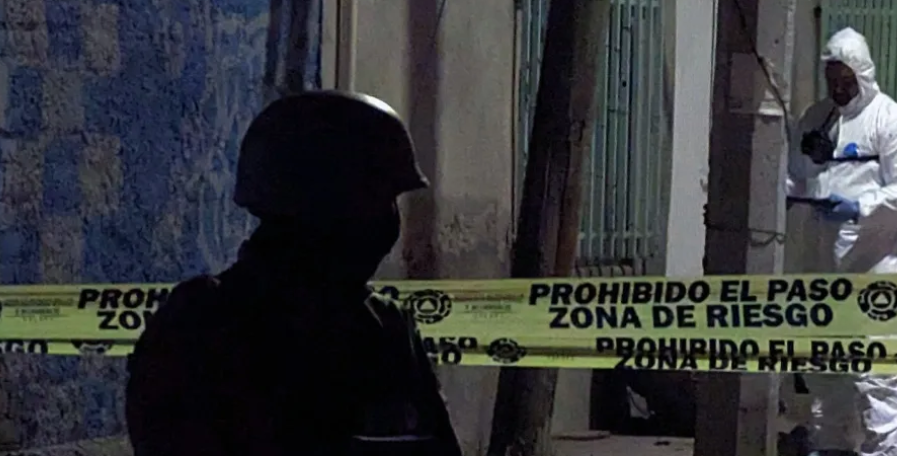

La Fiscalía General de Justicia del Estado de Guanajuato dio a conocer la detención de uno de los presuntos autores materiales del multihomicidio de cinco estudiantes de medicina localizados el 3 de diciembre en las instalaciones de la Universidad de Guanajuato Campus Celaya-Salvatierra.
La Fiscalía General de Justicia del Estado de Guanajuato dio a conocer la detención de uno de los presuntos autores materiales del multihomicidio de cinco estudiantes de medicina localizados el 3 de diciembre en las instalaciones de la Universidad de Guanajuato Campus Celaya-Salvatierra.
Se trata de Francisco Omar "N", alias el Verdus, acuerdo con la fiscalía, lograron datos de prueba que lo relacionan con el caso tras seguir sus movimientos mediante trabajo inteligencia y análisis de información.
“Se cuenta con elementos de prueba que acreditan su participación en diversos hechos delictivos, entre los cuales está el multihomicidio de los estudiantes” compartió la fiscalía a través de un comunicado.Se dio a conocer que en las próximas horas el inculpado será llevado ante un Juez, para que un agente del Ministerio Público le formule imputación y solicite su vinculación a proceso penal.
Cabe recordar que la noche del domingo 3 de diciembre de 2023, cinco estudiantes de Medicina de la Universidad Latina de México, fueron localizados sin vida al interior de un vehículo abandonado en un camino vecinal atrás de las instalaciones de la Universidad de Guanajuato. Luego de estos hechos, la fiscalía del estado señaló que los jóvenes estudiantes fueron secuestrados por un grupo criminal cuando se encontraban en un balneario en la comunidad Arreguin de Abajo.
Este caso provocó un desacuerdo entre las autoridades de Guanajuato y el gobierno federal luego de que el presidente Andrés Manuel López Obrador asegurara que el asesinato de estos jóvenes podría estar relacionado con compra de drogas, lo cual no ha sido confirmado por la fiscalía estatal ni por el gobierno federal.
